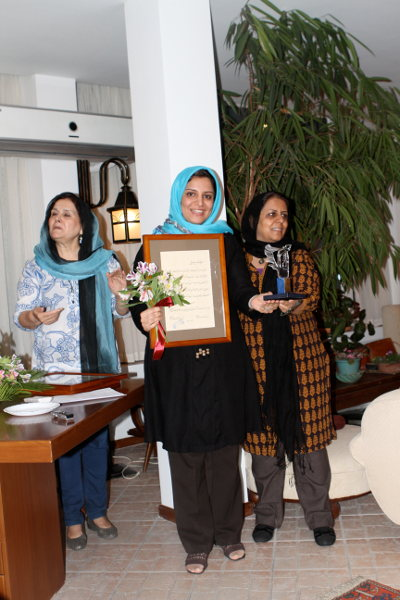
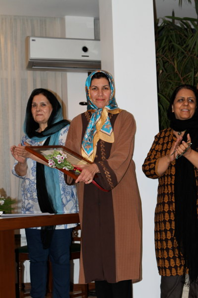
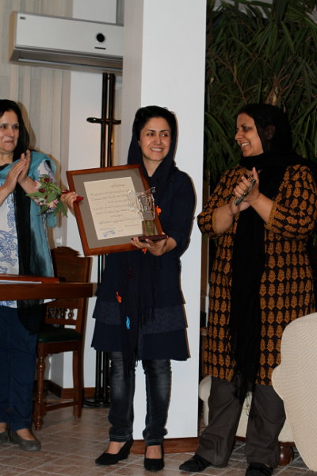

پذيرش > سایت نوشته ها > گزارش هشتمین دوره اهدای تندیس صدیقه دولت آبادی / مریم میرزانژاد


 گزارش هشتمین دوره اهدای تندیس صدیقه دولت آبادی / مریم میرزانژاد گزارش هشتمین دوره اهدای تندیس صدیقه دولت آبادی / مریم میرزانژاد
19 مهر 1391 - - نسخه قابل چاپ
کتابخانه دیجیتالی صدیقه دولت ابادی: عصر روز چهارشنبه ۱۵ شهریور، تعدادی از فعالان حوزۀ مطالعات زنان میهمان شیوا دولت آبادی بودند تا هشتمین دورۀ اهدای تندیس صدیقه دولت آبادی در حوزۀ مطالعات زنان را برگزار کنند. تندیس این دوره به دو کتاب تراژدی تن اثر فاطمه کریمی، سفر دانه به گل اثر، مریم عاملی رضائی اهدا شد و از کتاب امر وانموده اثر آتوسا راوش نیز تقدیر به عمل آمد. هر سه این کتاب ها در سال ۱۳۸۹ انتشار یافته اند و در ۱۳۹۰ داوری شدند. اما اهدای تندیس طی مراسم به دلایل متفاوت و بارها به تعویق افتاد.
در این مراسم اعضای کتابخانه صدیقه دولت آبادی، هیئت داوران تندیس صدیقه دولت آبادی، و جمعی از زنان فعال در حوزه مطالعات زنان حضور داشتند. ناهید توسلی، مسرت امیر ابراهیمی، زیبا جلالی و… از میهمانان این مراسم بودند.
در ابتدا دو کلیپ ویدوئویی از دو برنده تندیس این دوره، فاطمه کریمی و مریم عاملی رضائی، پخش شد و آتوسا راوش هم از تجربه نگارش کتاب خود صحبت کرد.
پس از آن شیوا دولت آبادی، عضو هیئت امنای کتابخانه صدیقه دولت آیادی، با بیان تاریخچۀ کوتاهی از تاسیس کتابخانه و کار آن در این سالها تا هنگام تعطیلی آن، یاد صدیقه دولت آبادی را نیز گرامی داشت.
هر چند شهلا اعزازی از غایبان مراسم بود، اما در تماسی تلفنی گفتگویی کوتاه با میهمانان داشت و به برگزیدگان کتاب تبریک گفت.

سپس، طبق برنامه، فیروزه مهاجر عضو هیئت امنای کتابخانه و هیئت داوران تندیس، دربارۀ تندیس، کتابخانه مجازی و صفحۀ فیس بوک کتابخانه صحبت کرد. او گفت، مراسم تندیس را از همان سال 1383 که کتابخانه صدیقه دولت آبادی تاسیس شد هر سال در 8 مارس و در همان روز تاسیس کتابخانه ی یکی دو روز دیرتر برگزار می کردیم. اما با پلمب شدن کتابخانه در اردیبهشت 1389، باید دربارۀ ادامه یا عدم ادامۀ کارمان، یعنی جایزه دادن به کتاب های حوزۀ مطالعات زنان و همچنین ادبیات زنان که از 1387 آن را هم به برنامه تندیس اضافه کرده بودیم، تصمیم می گرفتیم. بالاخره هم تصمیم گرفتیم مطالعات زنان را ادامه بدهیم. اما نداشتن یک فضای واقعی ثابت تا امروز امکان اینکه مراسم را در 8 مارس برگزار کنیم از ما گرفته است. در ضمن، پلمب شدن کتابخانه باعث شد که هیئت امنا تصمیم به راه اندازی یک صفحه فیس بوک و همچنین کتابخانه مجازی صدیقه دولت آبادی بگیرد که فعلا هردوی اینها فعال است. هرچند کتابخانۀ مجازی ما هنوز مشکلاتی دارد که باید حل شود. برای حل این مشکلات از دوستان می خواهیم اگر تجربه هایی در این زمینه ها دارند و علاقمند به همکاری با کتابخانه هستند به ما اطلاع بدهند.
کتابخانه مجازی قرار است هم بخشی از تجربۀ فعالان این حوزه را مستند کند، و این هم به درد محققانی می خورد که بخواهند در مورد این دوره تحقیق کنند و هم به هرحال گوشه ای از فعالیت های ما را برای آینده ثبت می کند. هم اینکه وقتی تصمیم به ادامۀ کار تندیس صدیقه دولت آبادی گرفتیم مکانی برای ثبت و انتشار اخبار مربوط به آن می خواستیم. کمال مطلوب این بود که، کتابخانه ای مجازی شبیه به کتابخانۀ اصلی خودمان درست کنیم. اما، انتشار اینترنتی کتاب هایی که آخرین تاریخ انتشارشان از سی سال کم تر باشد طبق قانون ممنوع است، مگر با موافقت ناشر و نویسنده. برندۀ تندیس دورۀ هفتم، زنانی که زیر مقنعه کلاهداری می کردند، تالیف دکتر منصوره اتحادیه، بود که چون خود او هم مؤلف و هم ناشر اثر بود اجازه داد کتاب را روی سایت کتابخانه بگذاریم. این یک امکان خیلی خوب بود. خواهش مان از دوستان این است که اگر کتابی یا سندی در اختیار دارند که مربوط به زنان است و با توجه به ضوابطی که گفته شد انتشار اینترنتی آن بلامانع است به ما قرض بدهند تا برای استفادۀ عموم روی سایت و صفحۀ فیس بوک کتابخانه بگذاریم. غیر از آن، لطفا اگر مایل به همکاری با کتابخانۀ مجازی، یا هیئت داوران تندیس، هستید به ما اطلاع بدهید.

در ادامۀ مراسم میزگردی با حضور نیره توکلی، زیبا جلالی، نسترن موسوی و فاطمه کریمی برگزار شد. نیره توکلی از داوران هشتمین دورۀ جایزۀ تندیس با بیان این که تندیس صدیقه دولت آبادی تنها جایزه ای است که زن ها به زن ها می دهند گفت: در جامعۀ ما یا مجال حرف زدن به زنان داده نمی شود یا اگر قرار است آثارشان بررسی شود در چارچوب معیارهای پدر سالارانه بررسی می شود. هر چند نمی خواهم همۀ جایزه هایی را که داده می شود نفی کنم،اما معمولا معیارهایی در نظر گرفته می شود که تندیس صدیقه دولت آبادی را از آنها متفاوت می کند. نیره توکلی در ادامه گفت: مهمترین کاری که می توانیم انجام بدهیم این است که کارهایی که زن ها برای زن ها انجام دادند مورد تقدیر قرار گیرد. ما خوشحال بودیم که کتابهای امسال کتابهای بهتری بودند، تعداد کتاب هایی که در سالهای قبل کاندیدا می شدند بسیار کمتر بود، اما امسال خوشبختانه این سه کتاب هر کدام به نحوی نشان دهندۀ رشد فکری زنان بود یکی از جنبۀ تئوریک یکی از جنبۀ عملی و دیگری هم از جنبۀ تاریخی. واقعا به همین دلیل جایزۀ تندیس صدیقه دولت آبادی را باید حفظ کرد.
ما مشکلات زیادی داریم. همین که الان خانم دولت آبادی خانه خود را در اختیار ما قرار دادند نشان دهندۀ محدودیت های مان در برگزاری مراسم است. هرچند اسم ایشان به نوعی با تندیس صدیقه دولت آبادی گره خورده، اما به هر حال ما برای خیلی چیزها نیاز به کمک داریم. عمده تر از همه کمک فکری، مثل حضور نیروهای جدید در داوری و تقویت این کار. کتاب خانه ای که با خون دل تشکیل شده بود و مایۀ امید بود، ولی همان هم بسته شد و از ما گرفته شد. اما به همین شکل ادامه خواهیم داد با داوران جدید و فکر های جدید.
زیبا جلالی ناشر هم از شرکت کنندگان در این میزگرد بود. وی بیان داشت: این مراسم با وجود این که در جایی محدود برگزار شد برای تک تک ما جای دلگرمی و امید دارد که به هر حال یک استمراری را در فعالیت زنان و بخش مکتوب زنان ببینیم. اولین جلسه اش را به یاد می آورم که در زیر زمینی تشکیل شد که محل اولیۀ کتابخانه صدیقه دولت آبادی بود و همه دوستان آنجا دور هم جمع شدند و روزی بسیار فراموش نشدنی بود، بخصوص برای من که مصادف بود با اولین هدیه به اولین کتابی که در حوزۀ مطالعات زنان چاپ کردم. کتاب خانم مشیر زاده بود. که جا دارد در این جا از خانم مشیر زاده هم تشکر کنم و یاد آن لحظات و کسانی را که این کتاب خانه را بنیان گذاشتند زنده کنم. به هر حال آغازی سمبلیک و یک تشویق و محرک سازنده برای ادامۀ انتشار کتاب های مطالعات زنان بود. بیشتر کتابهایی که در این حوزه منتشر کردیم جایزه گرفتند و الان شاهدم که نسلی از نویسنده های جوان این راه را ادامه می دهند. فکر می کنم این حرکت سبب این خلاقیت ها و ایجاد کتاب های این حوزه شده است. وی در ادامۀ سخنان خود گفت: الان همۀ ما در شرایط حاشیه ای به بقایمان ادامه می دهیم. یکی پلمپ می شود و به طور مجازی به بقای خود ادامه می دهد، یکی کتابش پس از انتشار مورد بی مهری قرار می گیرد. خیلی از کتاب های خودم مجوز انتشار نگرفت. همه این ها موجب حاشیه ای شدن کار ما می شود. ما چه باید بکنیم؟ فکر می کنم نباید نگرانی داشته باشیم فعلن برای اینکه مجازی هستیم، مهم این است که هستیم، همۀ ما با یک درد مشترک راه می رویم و ادامه می دهیم. زیبا جلالی ادامه داد، پس از مدتها که به ارشاد رفتم، گفتند شما هنوز هستید؟ کار می کنید؟ خودشان هم می دانند که همین که هستیم جای امید دارد. مهمتر از همه این است که در کنار هم باشیم و کمی تنوع در راه ها و گرایشها ایجاد کنیم. چون در این شرایط هم لازم است که جمع های زنان فراگیر تر باشد و افراد متنوع را در برگیرد. زیبا جلالی در ضمن پیشنهاد کرد که تندیس به کتاب های ترجمه هم تعلق بگیرد.

نسترن موسوی، از داوران تندیس صدیقه دولت آبادی، در این میزگرد با بیان دغدغه اش دربارۀ وضعیت رشتۀ مطالعات زنان گفت: چیزی نگرانم کرده و بر مبنای آن پیشنهادی هم دارم، آنچه که نگرانم کرده بیشتر مسیری است که رشتۀ مطالعات زنان در دانشگاه ها دارد برایش اتفاق می افتد. شماری از کتابها و درسهای این رشته چندان تغییر يافته-اند که چشم انداز مطلوبی را نشان نمی-دهند. چه بسا واحدهای حذف شده یا به طور کلی رویکرد متفاوت که در پیش گرفته شده است سبب شود کسانی که از این پس در دانشگاه-ها در حوزۀ مطالعات «زنان و خانواده» تربیت -می-شوند به اندازه-ی فارغ-التحصیلان پيشین در امور جاری زنان حساسیت-های لازم را نداشته باشند. نگرانی آن است که فارغ تحصیلانی که 4 سال پیش آموزش دیدند و امروز توانستند کمابیش کتابهایی را تولید کنند که می-بینید، دیگر تربیت نشوند. و این موضوعی است که باید به آن فکر کرد. پیشنهاد من، یکی این است که ما در صورت امکان زمینه ای را برای آن نوع آموزش هایی که در دانشگاه دست نمی-دهد، فراهم کنیم. مطالعات زنان، رشته ای دانشگاهی شمرده می-شود و به اين معنا با ادبیات داستانی تفاوت دارد، يعنی لزوما متکی به خلاقیت فردی نیست بلکه باید درس خواند و آموخت و تحقیق کرد. حالا که جنبه-هایی از این آموزش، آن طور که در همه جا عموما مرسوم است، دارد محدود می-شود تبعا تکمیل واحدهای درسی کنونی، از راه-های آموزشی دیگر، الزام-آور می نماید. امیدوارم یکی از خدماتی که سایت کتابخانه بتواند انجام دهد ارائه-ی درس-گفتارهایی در این خصوص باشد.
نکتۀ دیگر آن که چیزی که در این میان از قلم می افتد، مقاله است. چرا مقاله را پیش می کشم؟ دوستانی هستند که مقاله نویس اند و لزوما نوشته-های خود را به شکل کتاب انتشار نمی-دهند. در عین حال، در مطبوعات یا نشریه-های تخصصی هم نمی توانند چاپ کنند يا چاپ می-کنند ولی چندان به چشم نمی-آید. بنابراین شاید بشود در این مورد هم کاری انجام داد و بخشی از کار را به بررسی تک مقاله-ها اختصاص داد. البته می-دانم که این کار مستلزم داشتن نیرو است و در این شرایط چه بسا دعوت از کسانی برای گردآوری و انجام دادن این داوری چندان آسان نباشد.
فاطمه کریمی، نویسنده جوان کتاب تراژدی تن نیز در پایان نکات مهمی را با تکیه به تحربیات خودش بیان داشت. او گفت: می خواهم به عنوان کسی که در مرکز نبودم، و در یکی از شهر های حاشیه ای ایران شروع به کار کردم حرف بزنم، می خواهم از تجربیات خودم حرف بزنم، برای کسی مثل من که شروع به کار پژوهشی می کند همه چیز در شرایط بسیار محدود تر آغاز می شود. من تقریبا هیچ رابطه ای با جمع زنان دیگر اندیش نداشتم، دسترسی به کتاب نداشتم، البته تحصیل در دانشگاه علامه و آشنایی با اساتیدی مانند دکتر اعزازی به من کمک کرد تا تجربیاتم را به عنوان دغدغه ام مطرح کنم و آن را به کتاب تبدیل کنم. اما، می خواهم بگویم ما برای دیده شدن به محدودیت های مضاعفی دچار هستیم و از همه انتظار دارم فرصت دیده شدن را برای نویسندگان زنی که در حاشیه قرار گرفته اند فراهم کنند، تا انگیزه برای پژوهش و پرداختن به مسائل زنان در حاشیه ایجاد شود. ما به همدلی زنانه نسبت به زنان قومیت ها و فضای بیشتر احتیاج داریم.البته، من فکر می کنم خود زنان اقوام باید مسائل شان را مطرح کنند، چرا که زنان جریان اصلی ممکن است نتوانند موقعیت آنها را دریابند و درک کنند.
دوستانی که در مطبوعات هستند، در دانشگاه ها هستند، باید این کتابها را معرفی کنند یا هدیه کنند به هر شکل، یا بسته اش کنیم به این ور و آن ور بفرستیم.
ناهید توسلی هم پیشنهاد کرد، کتابهای برنده شده را در مجلۀ ماه آیندۀ نافه معرفی کنیم. همچنین، در حوزۀ زنان هرکس هر کتابی دارد دو نسخه به نشانی مجله بفرستد تا در مجلۀ نافه معرفی شود.
نیره توکلی در جمع بندی میزگرد گفت: خواهش می کنیم کمک کنید تا کتابهایی را که مجوز دارند روی سایت قرار دهیم. دوم این که مقاله بفرستید، باید کار کنیم. نباید همه چیز به امروز ختم شود، جلسات داوران به زودی برگزار می شود، سالی یک بار هم جلسه عمومی برگزار کنیم.
پس از آن نرگس طیبات، عضو هیئت امنای کتابخانه و هیئت داوران تندیس، گزارش روند داوری کتابها را که شهلا اعزازی تهیه کرده بود خواند.
در پایان این مراسم نیز تندیس صدیقه دولت آبادی به برندگان، فاطمه کریمی و مریم عاملی رضائی، اهدا شد و هیئت داوران تندیس از خانم آتوسا داروش با اهدای تقدیرنامه ای به ایشان سپاسگزاری کردند.
ارسال به
بالاترین
،
توییتر
،
فریندفید
،
فیسبوک
در همين بخش :
 یک خبر تلخ؟ یک قانونشکنی؟ یک تصمیم بخشنامهای جدید؟ یک خبر تلخ؟ یک قانونشکنی؟ یک تصمیم بخشنامهای جدید؟
چرا بایست به سکسوالیته پرداخت؟ / نفیسه آزاد
آزارجنسی خانگی؛ «قربانی» نه، «نجات یافته»
زنان، بزرگترین بازندگان بهار عرب
سانسور از دیدگاه جنسیتی/الهه امانی
ديگر بخش ها :
طرح یک میلیون امضا
|
مقالات
|
سایت نوشته ها
|
اخبار
|
گزارش كمپين
|
گفت و گو
|
علیه سکوت
|
كوچه به كوچه
|
نامه های شما
|
گزارش ویژه
|
گفتگو با اعضا
|
ویژه سالگرد کمپین
|
تصویر برابری
|
دل آرام علی
|
تریبون
|
مقالات
|
تاریخ شفاهی
|
خارج از چارچوب
|
کتابخانه
|
درباره کمپین
|
کمپین در شهرها
|
کمپین در بند
|
صدای تغییر
|
ویژه 22 خرداد
|
لایحه حمایت از خانواده
|
گالری
|
عشا مومنی
|
امیر یعقوبعلی
|
خدیجه مقدم
|
راحله عسگری زاده و نسیم خسروی
|
پروین اردلان،جلوه جواهری، مریم حسین خواه، ناهید کشاورز
|
زینب پیغمبرزاده
|
سعیده امین، سارا ایمانیان، محبوبه حسین زاده، ناهید کشاورز و همایون نامی
|
احترام شادفر
|
نسیم سرابندی زاده،فاطمه دهدشتی
|
وبلاگ مهمان
|
پرونده خرم آباد
|
دستگیری ها
|
مریم مالک
|
پرستو اللهیاری
|
مهرنوش اعتمادی
|
سمیه رشیدی
|
Other Languages
|
همراهان
|
«فراخوان کمپین ده روز با بهاره هدایت»
| English
|